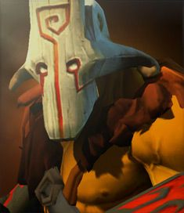

Dota Manual
Dota добра

Juggernaut

Біографія
Ніхто й ніколи не бачив обличчя, схованого за маскою Джаґернаута Юрнеро. Ходять чутки, що він взагалі його не має. За непослух панові Юрнеро вигнали з древнього Острова Масок. І кара ця стала його спасінням. Невдовзі чари помсти затягнули острів у морську глибінь. А Юрнеро залишився єдиним продовжувачем вікових традицій Джаґернаутів, їхніх ритуалів і мистецтва фехтування. Рішучість та відвага — плоди нескінченних тренувань Юрнеро, а його незвична техніка бою доводить, що майстер не втомлюється випробовувати себе. Та його мотиви такі ж загадкові, як і вираз обличчя. І як для того, хто вже двічі втратив усе, Юрнеро б’ється так, наче не сумнівається у своїй перемозі.
| 20 + 2,2 | |||||
| 34 + 2,8 | |||||
| 14 + 1,4 | |||||
| 16‒20 | |||||
| 1 | |||||
| 305 | |||||
| Рівень | 1 | 15 | 25 | 30 | |
|---|---|---|---|---|---|
| Пошкодження | 50-34 | 78-62 | 98-82 | 108-92 | |
| Здоров'я | 600 | 1160 | 1560 | 1760 | |
| Мана | 243 | 411 | 531 | 591 | |
| Захист | 6.44 | 10.92 | 14.12 | 15.72 | |
| Час атаки | 0.98 | 0.79 | 0.69 | 0.65 | |
| Атак в секунду | 0.96 | 1.16 | 1.3 | 1.37 | |
| Дальність огляду | 1800 / 800 | ||||
| Дальність атаки | 150 (ближній бій) | ||||
| Базовий реген | 0.5 | ||||
| Базовый манареген | 0 | ||||
| Дерево навичок | Рівень | Навик | |||
| 25 | +1 сек. действия Omnislash | +475 к здоровью | |||
| 20 | +100 к урону в секунду от Blade Fury | +8 к броне | |||
| 15 | +20 к скорости атаки | Blade Fury даёт +80 к скорости передвижения | |||
| 10 | +20 к скорости передвижения | +5 ко всем атрибутам | |||